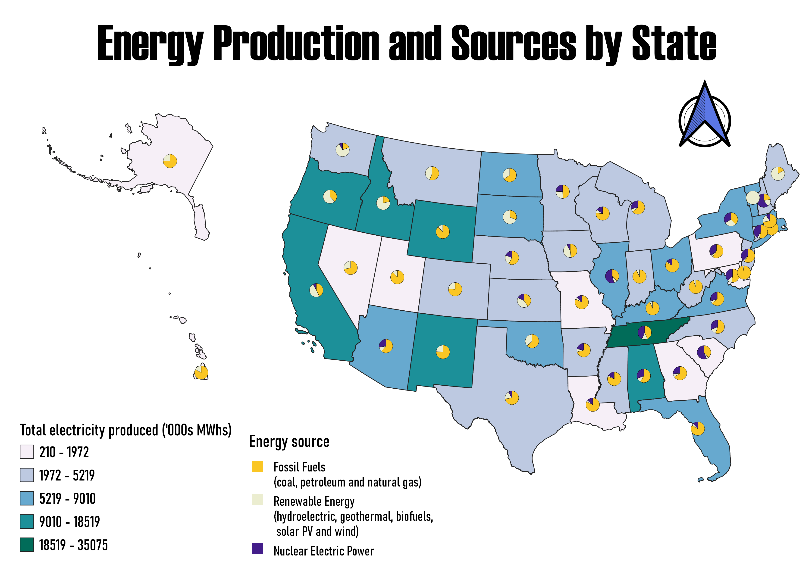

Homework 9: Choropleth and proportional symbol map
Energy production and energy sources by state
Energy production from non-renewable sources releases tons of carbon dioxide (CO2) every year, which contributes to global warming. In this map we can observe the electricity produced by each state and the source from which they produced it. It is noticeable that there is still a lot of work to do to become carbon neutral, meaning producing all of the energy from renewable sources, by 2050 (as Biden plans), especially in states like West Virginia and Wyoming. Renewable sources of energy include hydroelectric, geothermal, solar, wind, and others. I selected this topic because as an Environmental Science major I have been learning about decarbonization in the energy sector and I personally care about climate change.

Data used for this project
CSV dataset
Link to shapefile